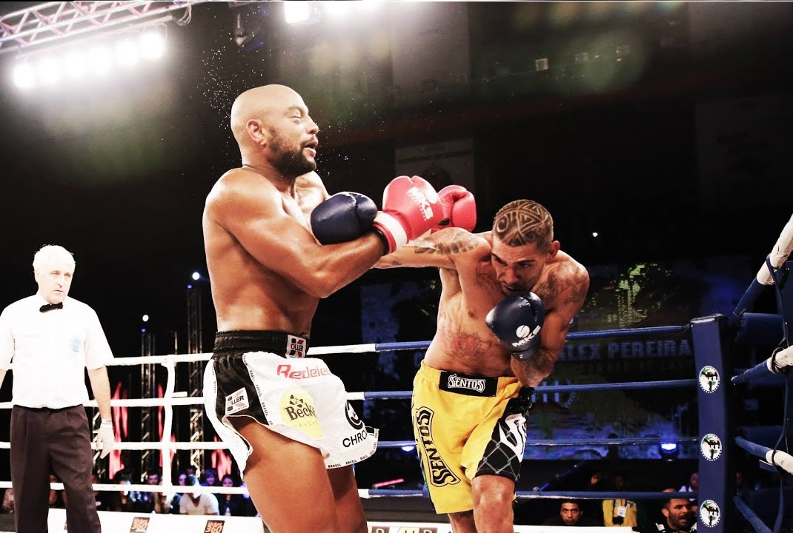
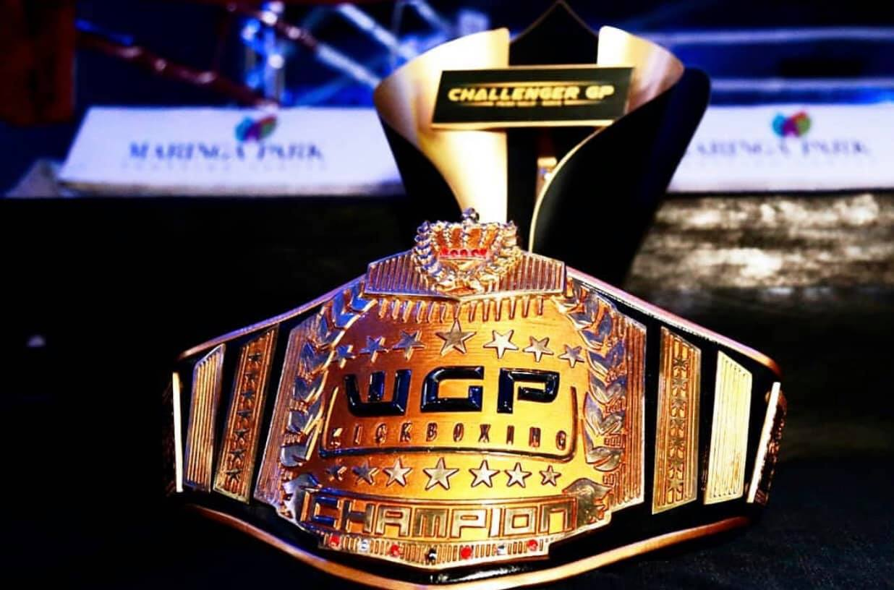

WGP
KICKBOXING
El evento de kickboxing más grande de Latinoamérica.
Fundado en julio de 2011, WGP Kickboxing es el principal circuito profesional de kickboxing de América Latina que promueve una serie de eventos de kickboxing en el continente. Con sede en São Paulo, la organización fue fundada por Paulinho Zorello, hijo del ex campeón mundial de peso pesado Paulo Zorello.

Ranking
Campeones WGP Kickboxing 2025:
- Super-Medio (hasta 78,1 kg): Marcos Carvalho (Brasil)
- Ligero (hasta 60 kg): Cabelo Monteiro (Brasil)
- Super-Ligero (hasta 64,5 kg): Tomás Aguirre (Argentina)
- Peso Mosca Femenino (hasta 52 kg): Giuliana Cosnard (Argentina)
